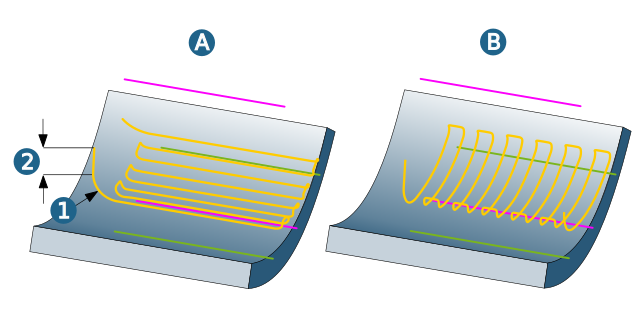
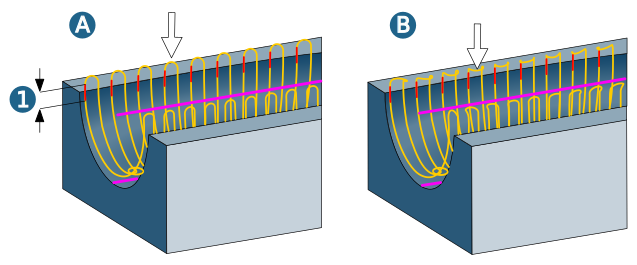

Macros
Additional movements to vertical infeed and retract movements that define a gentle approach and retract behavior at the calculated milling paths.
Approach macro / Retract macro
Additional movements during infeed to the first milling path or during retraction after the last milling path of machining. Radius and Axial offset can be defined separately for approach and retract.
(1) = Radius, (2) = Axial offset, (A) Strategy = Along, (B) Strategy = Across.
|  |
Return macro / Linking movement
The retraction of the tool at the end of a path and the approach to the next path is referred to as a return macro. Retraction and approach take place in one continuous movement. If defining the optional Radius, small values should be given preference, particularly in narrow channels. If radius = 0, the return macro is not executed and therefore the tool is not lifted from the component.
The two ends of the return macro are connected with a smooth movement (spline), for which a separate Feedrate can be defined, which, as a rule, may be larger than the machining feedrate. For safety’s sake, the increased feedrate is only carried out if the totalLinking movement (1) does not fall below the Min. clearance to part.
Example: (A) Radius = 0, (B) Radius = 2.
|  |